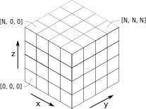
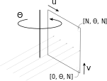

Tomosipo¶
Tomosipo is a pythonic wrapper for the ASTRA-toolbox of high-performance GPU primitives for 3D tomography.
The aim of this library is as to:
Expose a user-friendly API for high-performance 3D tomography, while allowing strict control over resource usage
Enable easy manipulation of 3D geometries
Provide easy integration with
Deep learning toolkits, such as PyTorch
The operator discretization library (ODL) for optimization in inverse problems
PyQtGraph for interactive visualization of geometries and data
Installation¶
A minimal installation requires:
python >= 3.6
ASTRA-toolbox (the latest 1.9.x development version is required)
CUDA
These requirements can be installed using conda (replace <X.X> by your
CUDA version)
conda create -y -n tomosipo python=3.6 astra-toolbox cudatoolkit=<X.X> -c astra-toolbox/label/dev
pip install https://github.com/ahendriksen/tomosipo@develop
source activate tomosipo
To use tomosipo with PyTorch, QT, ODL, and cupy, install:
conda create -y -n tomosipo python=3.6 astra-toolbox cudatoolkit=<X.X> pytorch cupy pyqtgraph pyqt pyopengl cupy \
-c defaults -c astra-toolbox/label/dev -c pytorch -c conda-forge
source activate tomosipo
# Install latest version of ODL:
pip install git+https://github.com/odlgroup/odl
# Install development version of tomosipo:
pip install https://github.com/ahendriksen/tomosipo@develop
Usage¶
Simple examples:
Create and visualize geometries¶
import astra
import numpy as np
import tomosipo as ts
from tomosipo.qt import display
# Create 'unit' cone geometry
pg = ts.cone(angles=100, size=np.sqrt(2), cone_angle=0.5)
print(pg)
# Create volume geometry of a unit cube on the origin
vg = ts.volume()
print(vg)
# Display an animation of the acquisition geometry
display(pg, vg)
Express algorithms succinctly¶
In the following example, we implement the simultaneous iterative reconstruction algorithm (SIRT) in a couple of lines. This examples demonstrates the use of the forward and backward projection.
First, the SIRT algorithm is implemented using numpy arrays, which reside in system RAM. Then, we move all data onto the GPU, and compute the same algorithm using PyTorch. This is faster, because no transfers between system RAM and GPU are necessary.
import astra
import numpy as np
import tomosipo as ts
from timeit import default_timer as timer
# Create 'unit' cone geometry, and a
pg = ts.cone(size=np.sqrt(2), cone_angle=1/2, angles=100, shape=(128, 192))
# Create volume geometry of a unit cube on the origin
vg = ts.volume(shape=128)
# Create projection operator
A = ts.operator(vg, pg)
# Create a phantom containing a small cube:
phantom = np.zeros(A.domain_shape)
phantom[20:50, 20:50, 20:50] = 1.0
# Prepare preconditioning matrices R and C
R = 1 / A(np.ones(A.domain_shape))
R = np.minimum(R, 1 / ts.epsilon)
C = 1 / A.T(np.ones(A.range_shape))
C = np.minimum(C, 1 / ts.epsilon)
# Reconstruct from sinogram y into x_rec in 100 iterations
y = A(phantom)
x_rec = np.zeros(A.domain_shape)
num_iters = 100
start = timer()
for i in range(num_iters):
x_rec += C * A.T(R * (y - A(x_rec)))
print(f"SIRT finished in {timer() - start:0.2f} seconds")
# Perform the same computation on the GPU using PyTorch.
# First, import support for pytorch tensors
import tomosipo.torch_support
# Move all data to GPU:
dev = torch.device("cuda")
y = torch.from_numpy(y).to(dev)
R = torch.from_numpy(R).to(dev)
C = torch.from_numpy(C).to(dev)
x_rec = torch.zeros(A.domain_shape, device=dev)
# Perform algorithm
start = timer()
for i in range(num_iters):
x_rec += C * A.T(R * (y - A(x_rec)))
# Convert reconstruction back to numpy array:
x_rec = x_rec.cpu().numpy()
print(f"SIRT finished in {timer() - start:0.2f} seconds using PyTorch")
SIRT finished in 2.07 seconds
SIRT finished in 0.94 seconds using PyTorch
Conventions¶
Axes and indexing¶
Tomosipo follows numpy’s indexing convention. In the image below, we display the coordinate axes and indexing into a volume cube. The z-axis points upward.

We display an example for a parallel geometry with its associated sinogram indexing below. The detector coordinate frame is defined by two vectors
u: Usually points sideways and to the “right” from the perspective of the source. The length of u defines the width of a detector pixel.
v: Usually points upwards. The length of v defines the height of a detector pixel.

In short,
volume geometry and data are indexed in (Z, Y, X) order
projection geometries are indexed in (angle, v, u) order
projection data is stored as a stack of sinograms, indexed in (V, angle, U) order.
The coordinate system (z, y, x) is left-handed rather than right-handed.
Conventions in naming and ordering¶
Whenever a function takes as parameters a volume geometry, projection geometry, or operator, there is a fixed ordering:
operator
volume (data or geometry)
projection (data or geometry)
As parameters, properties, and in function names, we use:
shape: The number of voxels / pixels in each dimension
size: The physical size of the object in each dimension
dist: Short for distance
vec: Short for vector
obj: Short for object
vol: Short for volume
pos: Short for position: this is alway the center of an object
src: Short for source
det: Short for detector
pos: Short for position
len: Short for length
rel: Short for relative
abs: Short for absolute
num*: Number of * (angles for instance)
In examples and code we use:
pg: projection geometry
vg: volume geometry
pd: projection data
vd: volume data
Geometry¶
There are several helper functions to create a geometry:
ts.parallel: creates a 3D circular parallel beam geometryts.cone: creates a 3D circular cone beam geometryts.parallel_vec: creates a 3D parallel beam geometry where the beam and detector can be arbitrarily orientedts.cone_vec: creates a 3D cone beam geometry where the source and detector can be arbitrarily orientedts.volume: creates an axis-aligned volume geometryts.volume_vec: creates an arbitrarily oriented volume. This object cannot be converted to ASTRA directly, but can be used in geometric computations.